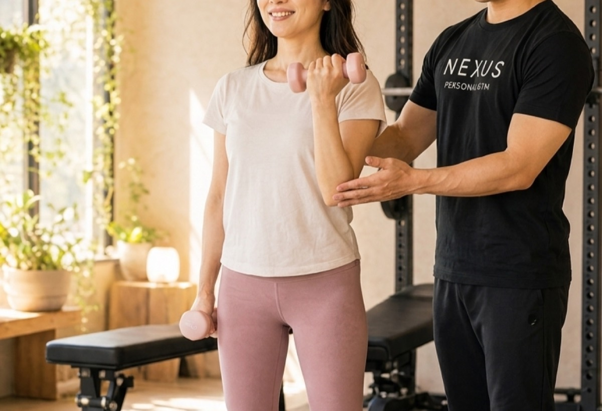
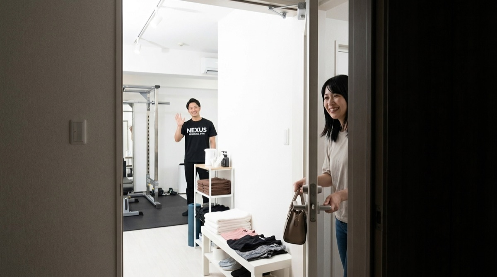
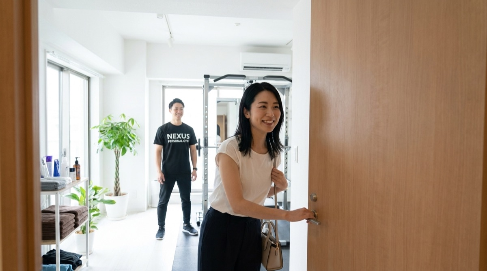
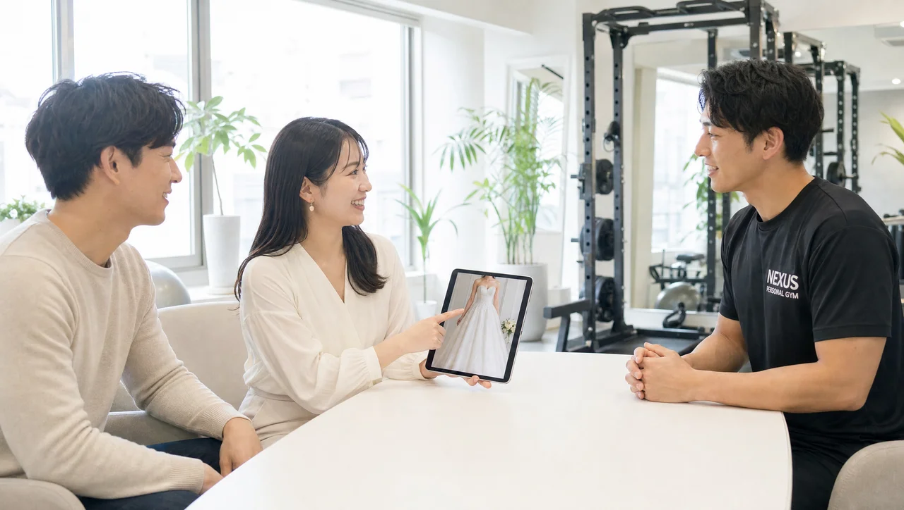
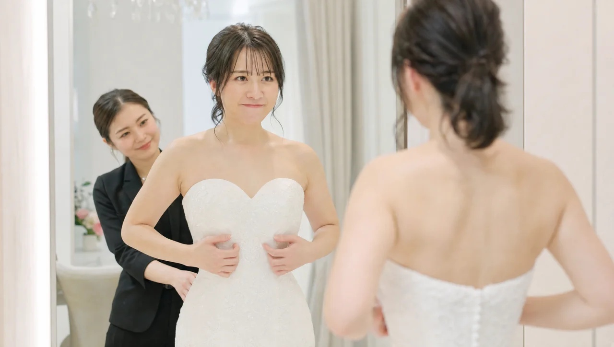
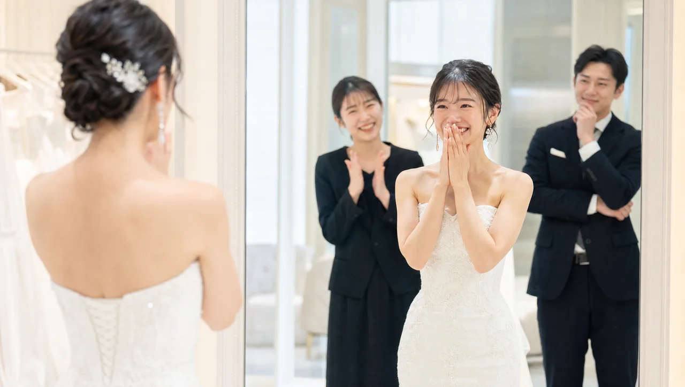
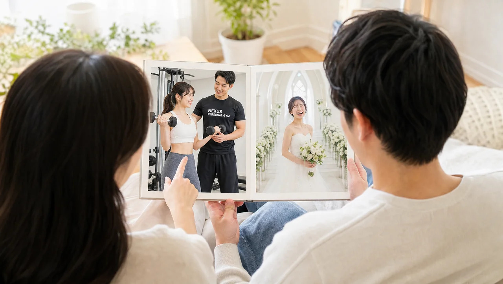

NEXUS Personal Gym ／ 愛知県名古屋市千種区
今池駅近く｜NEXUSパーソナルジム 名古屋今池店｜高額ジムと同じ内容を、適正価格で
名古屋市千種区今池、地下鉄東山線・桜通線の今池駅からすぐにある完全個室パーソナルジムです。Google口コミは★4.9（104件・2026年7月時点）。名古屋今池店を選ばれた方のなかには、「東京の有名な高額ジムで痩せた経験があるけれど、とても高額だった。名古屋に引っ越して再開するにあたってNEXUSへ。同じ内容が、この価格で受けられて大満足」という方がいらっしゃいます。食事管理・ウェア・プロテインまで込みで、月4回18,000円（1回4,500円〜）から。トレーニングは一人ひとりの体力と目的に合わせたオーダーメイドで、毎回メニューが変わるので飽きません。完全個室で担当トレーナーと二人だけだから、人目を気にせず集中でき、隠れ家のように落ち着いて通えます。会員の約85%が女性で、運動初心者の方も安心。毎日8:00〜23:00・LINE予約で、無理なく続けられます。挙式日から逆算する結婚式前のブライダルボディメイクにも対応しています。
- ブライダル対応
- 完全個室
- Google口コミ★4.9
- 今池駅すぐ
- 高額ジム経験者も納得
- オーダーメイド指導
- 手ぶらOK
この店舗の特徴
NEXUS名古屋今池店は、名古屋市千種区今池にある完全個室パーソナルジム。地下鉄東山線・桜通線の今池駅からすぐという好立地です。この店舗が多くの方に選ばれている理由は、「高額なパーソナルジムと同じ内容を、適正価格で受けられる」こと。実際に、東京の有名な高額ジムを経験してから名古屋今池店に通い始めた方が「同じ内容がこの価格で受けられて大満足」と評価してくださっています。食事管理・ウェア・プロテインまですべて込みで、月4回18,000円（1回4,500円〜）から。トレーニングは体力と目的に合わせたオーダーメイドで、毎回変わるメニューだから飽きずに続けられます。完全個室のマンツーマンなので、人目を気にせず自分のペースで。予約はLINEでサッと完結。Google口コミ★4.9（104件）という評価が、内容と価格の両立を物語っています。「高い＝良い」ではなく、「納得できる内容を、続けられる価格で」——今池で、そんなパーソナルジムを始めてみませんか。
今池エリアでパーソナルジムをお探しの方へ
今池でパーソナルジムをお探しの方へ。地下鉄東山線・桜通線が交わる今池駅のすぐ近くにも、24時間型のマシンジムはあります。ただ「使い方が分からず、なんとなく足が遠のいた」という方は多いもの。NEXUS名古屋今池店は、完全個室でトレーナーがマンツーマンで寄り添うパーソナルジムです。一つひとつの動作を丁寧に確認しながら進めるので、運動が続かなかった方や初めての方でも、自分のペースで安心して続けられます。お店やカフェの集まる、にぎやかな千種区・今池のまちで、「また来たい」と思える通いやすさを大切にしています。仕事帰りにも寄りやすいので、続けることそのものが負担になりにくい設計です。まずは無料体験で、あなたに合うかどうかを気軽に体感してみてください。
東京の高額ジム経験者が選んだ理由
「東京の有名な高額ジムで痩せた。でも、とにかく高額だった」——名古屋に引っ越して身体づくりを再開するにあたり、名古屋今池店を選んでくださった方の言葉です。実際に通い始めて感じたのは、「同じ内容が、この価格で受けられる」という納得感でした。パーソナルジムの価格差は、必ずしも指導の質の差ではありません。名古屋今池店では、食事管理・ウェア・タオル・ドリンク・プロテインまですべて込みで、月4回18,000円（1回4,500円〜）から。トレーニングだけでなく、痩せる食べ方までしっかりサポートします。全トレーナーは3ヶ月の自社教育プログラムを修了してからデビューし、指導メソッドはブランド全体で共有。だからこそ、高額ジムを経験した方でも「内容は変わらない」と感じていただけます。系列店では、都内の月島店が★5.0（172件）、練馬店が★5.0（95件）という評価をいただいています（2026年7月時点）。高額なプランに踏み切れず迷っていた方こそ、まずは無料体験で内容と価格を確かめてみてください。
オーダーメイドで、毎回変わるメニュー

「同じメニューの繰り返しで飽きてしまった」——これは、ジム通いが続かなくなる大きな理由のひとつです。名古屋今池店のトレーニングは、決まったプログラムをこなすのではなく、一人ひとりの体力・目的・その日のコンディションに合わせて組み立てるオーダーメイド。だからこそ、「毎回メニューが変わって飽きない」という声をいただいています。前回の様子を踏まえて負荷や種目を調整し、少しずつできることを増やしていくので、身体の変化を実感しながら通えます。完全個室のマンツーマンだから、フォームのちょっとした崩れもその場で修正。運動初心者の方でも、正しい動きを一から身につけられます。「今日は疲れているから軽めに」「調子がいいから少し追い込みたい」——そんな体調の波にも柔軟に対応します。決まりきったメニューではなく、その日のあなたに必要なトレーニングを。だから、いつの間にか通うことが生活の一部になっていきます。
LINEで予約、手ぶらで来店

「ジム通いは、荷物の準備と予約の手間でつい足が遠のく」——そんな経験はありませんか。名古屋今池店なら、予約・変更はLINEからサッと完結。6時間前まで無料でキャンセル・変更ができるので、急な予定変更にも対応しやすい設計です。さらに、ウェア・水・タオル・プロテインまですべて無料でご用意しているので、仕事帰りや買い物のついでに、手ぶらでふらっと立ち寄れます。着替えを詰めたバッグも、洗って持ち帰るタオルも必要ありません。今池駅からすぐなので、栄や千種での用事のついでにも寄りやすい立地です。完全個室なので、着替えや身支度も人目を気にせず。トレーニングが終わったら、また身軽に日常へ戻るだけ。この“気軽さ”こそが、通い続けるための最大のコツです。

今池駅すぐ。千種・池下からも
名古屋今池店は、地下鉄東山線・桜通線が乗り入れる今池駅からすぐの、名古屋市千種区今池にあります。今池は栄と千種の中間に位置し、東山線・桜通線の2路線が使えるアクセスの良さが魅力。栄方面からも、千種・池下方面からも通いやすく、仕事帰りや買い物のついでに立ち寄れます。「わざわざジムのためだけに遠出する」のではなく、日々の生活動線の延長で通えるからこそ、トレーニングは習慣として続きます。NEXUSは同じ千種区に、この名古屋今池店（今池）と本山店（松竹町）の2店舗があります。生活圏やその日の予定に合わせて2店舗を使い分けることもでき、会員の方は他店舗もご利用いただけます。ウェア・水・タオル・プロテインまですべて無料なので、仕事帰りのそのままの姿で手ぶらで立ち寄れます。まずは無料体験で、今池の通いやすさを確かめてみてください。
千種区のもう一軒｜本山店を見るPrice料金プラン
入会金は通常55,000円、無料体験当日入会で15,000円（税込）に割引。AI食事指導は月額3,000円（税込）。食事管理・ウェア・プロテイン込みで、この価格。全店舗共通の料金です。
Bridal Body-make結婚式まで、最高の自分をつくる名古屋今池店のブライダルボディメイク
名古屋今池店では、挙式日から逆算した結婚式前のボディメイクに力を入れています。ドレスで視線が集まる背中・二の腕・デコルテ・ウエストを、完全個室のマンツーマンで整えます。会員の約85%が女性。体に不必要に触れないノータッチ指導を基本にしているので、はじめての方も安心してトレーニングに集中できます。悩みから当日、そしてその先まで——挙式に向かう物語に、名古屋今池店が伴走します。




「ドレスの試着で二の腕が気になった」「背中の開いたデザインを、体型を理由に諦めたくない」——挙式という動かせない期日があるからこそ、ボディメイクは最後までやり切れます。名古屋今池店では、まず挙式日とドレスのデザインをうかがい、挙式日から逆算した90日プラン・60日プランで「いつまでに、どの部位を、どこまで」を最初に設計します。残された日数が少なくても、部位を絞って集中的に取り組めば体のラインは十分に変えられます。極端な食事制限で当日フラフラ……ということがないよう、その日のコンディションから逆算する無理のない指導で、式当日にピークを合わせます。目標が数字ではなく“当日の自分の姿”だからこそ、「このデザインで大丈夫かな」から「このドレスを選んでよかった」へと、モチベーションが途切れません。
名古屋・栄・千種エリアで挙式を予定されている方に。打ち合わせや試着の帰りに、今池で30分から。名古屋今池店は今池駅すぐで通いやすく、準備で慌ただしい時期でも、仕事や式場との打ち合わせの帰りに、生活動線のなかへ無理なくトレーニングを組み込めます。高額なブライダル短期集中プランに悩んだら、同じ内容を適正価格で始められる選択肢として、ぜひ一度ご検討ください。
挙式90日前に入会し、週1〜2回のペースで通いました。背中の開いたドレスに合わせて、二の腕と背中を中心にプランを組んでもらい、途中のドレス試着ではっきりサイズダウンを実感。フォームを一から教わったので、家での自主トレも効くようになりました。当日は最高のコンディションでバージンロードを歩けて、式後もそのまま通っています。
上記はサービス内容をわかりやすく伝えるためのモデルケース（イメージ）であり、特定のお客様の口コミではありません。
そして、挙式はゴールではなく新しい生活のスタートでもあります。せっかく作り上げた身体を、そのまま新生活の習慣に。名古屋今池店は毎日8:00〜23:00営業・月4回18,000円（1回4,500円〜）から続けられるので、挙式後の体型維持から、産後のボディメイクまで、人生の節目に長く伴走します。全国約70店舗のネットワークがあるため、引っ越しや里帰りの際も最寄り店舗へ。「一生に一度」のために始めた習慣が、その後の人生を支える土台になります。
挙式日からの逆算タイムライン｜ブライダル専用ページを見るReviewsお客様の声
NEXUS名古屋今池店はGoogle口コミ★4.9・104件（2026年7月時点）。高額パーソナルジムの経験者も納得する内容と適正価格が評価されています。食事管理まで込みの指導と、体力・目的に合わせたオーダーメイドのメニューが、続けやすさにつながっています。
東京の有名な高額ジムで痩せた経験がありますが、とても高額でした。名古屋に引っ越して再開するにあたりNEXUSへ。食事管理まで含めて同じ内容が、この価格で受けられて大満足です。もっと早く知りたかった。
自己流で「これで合ってる？」とずっと不安でしたが、フォームから丁寧に教わり、正しい効かせ方が分かってきました。完全個室のマンツーマンなので質問もしやすく、少しずつ身体が変わり始めています。
月4回で続くか不安でしたが、毎回メニューが変わって飽きず、その日の体調に合わせて調整してもらえるので通うのが楽しみに。いつの間にか、トレーニングが生活の一部になっていました。
Access Route今池駅からのアクセス
地下鉄東山線・桜通線 今池駅が最寄りです。名古屋市にある完全個室の隠れ家ジムで、駅から徒歩圏内。大きな看板を出していないため、初めての方には無料体験のご予約時にLINEで分かりやすい順路をご案内します（〒464-0850 愛知県名古屋市千種区今池4丁目4-20 ナゴヤマンション6A）。
アクセス
- 店舗名
- NEXUSパーソナルジム 名古屋今池店
- 住所
- 〒464-0850
愛知県名古屋市千種区今池4丁目4-20 ナゴヤマンション6A - 最寄り駅
- 地下鉄東山線・桜通線 今池駅（すぐ）
- 営業時間
- 毎日 8:00〜23:00
- 電話番号
- 080-9740-2267
名古屋今池店のよくある質問
Q今池・千種区にパーソナルジムはありますか？+
Q大手の高額パーソナルジムとの違いは何ですか？+
Q本山店との違いは？+
Q結婚式まで2ヶ月しかなくても間に合いますか？+
Qブライダルエステとパーソナルジムはどう違いますか？+
Q挙式後や産後も通い続けられますか？+
よくある質問（全店共通）
料金・制度などNEXUS全店に共通するご質問です。さらに詳しくは110問のFAQをご覧ください。
Q料金はいくらですか？+
Q手ぶらで通えますか？+
Qキャンセルはいつまでできますか？+
Q食事指導はありますか？+
Qトレーナーはどんな人ですか？+
Q女性会員は多いですか？+
Q体験の流れは？+
NEXUSパーソナルジムの特徴・料金をもっと見る
近隣の店舗
同じ名古屋市千種区内にあるNEXUSの店舗です。お引越しやお勤め先の変更などに合わせて、通いやすい店舗をお選びいただけます。
NEXUS本山店（本山駅）愛知県の店舗一覧を見る